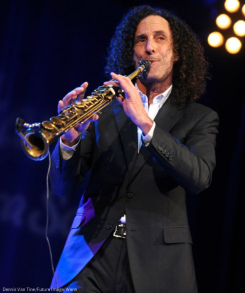

Kenny G
Check out the sweet, smooth sounds of Jazz saxophonist, Kenny G.
Kenny G, born Kenneth Bruce Gorelick, is an American saxophonist who has sold over 75 million records worldwide. He began playing the saxophone at the age of 10 and studied with saxophonist Jean-Marie Londeix.
He released his first solo album in 1982 and has since released over 20 albums. He is known for his smooth jazz sound and hit songs such as "Songbird" and "Going Home."
In 1986, Kenny G entered the most commercially successful period of his career. His fourth solo album, Duotones, was released in September 1986 and features an original instrumental track, "Songbird", inspired by his decision to move from Seattle to Los Angeles, which marked the start of a new life for him.
The album went on to sell five million copies in the US alone and increased his profile worldwide as a result. "Songbird" reached No. 4 on the Billboard Hot 100 and the lead single, "Don't Make Me Wait for Love", featuring Lenny Williams on lead vocals, went to No. 15 on the Hot 100 and No. 2 on the Billboard Adult Contemporary chart in 1987.
His sixth studio album, Breathless, was released in 1992, and went on to become the best-selling instrumental album ever, with over 15 million copies sold worldwide, selling 12 million copies in the United States alone.
His first holiday album, Miracles, sold over 13 million copies, making it the most successful Christmas album to date.[11] He also performed the "National Anthem of the United States" at the 1994 FIFA World Cup closing ceremony at the Rose Bowl in Pasadena, California, on July 17, 1994.
Kenny G earned a place in the Guinness Book of World Records in 1997 for playing the longest note ever recorded on a saxophone. Using circular breathing, Kenny G held an E-flat for 45 minutes and 47 seconds at J&R Music World in New York City.
| Music Awards Won | |
|---|---|
| 1994 | Grammy Award - "Forever In Love" - Best Instrumental Composition |
| 1994 | American Music Award - Favourite Adult Contemporary Artist |
Kenny G plays the Selmer Mark VI soprano, alto and tenor saxophones. He has created his own line of saxophones called "Kenny G Saxophones".
"Music is my passion and has always been a big part of my life." - Kenny G

"I practice my saxophone three hours a day. I’m not saying I’m particularly special, but if you do something three hours a day for forty years, you get pretty good at it. - Kenny G"
Here is a link in case the video doesn't work: Midnight Madness by Kenny G
For more information and updates about Kenny G, visit his official website.